KuaiRecV2：面向持续学习、多样性与多任务推荐的大规模评测基准
Chenxu Li、Shuchang Liu 等来自中国科学技术大学与快手的研究者提出 KuaiRecV2，把生成式推荐放进动态候选池和连续三十天的训练过程，检验准确率、多层级多样性与多行为表现。论文于北京时间 2026 年 11 月 12 日首次提交；NeurIPS 2026 官方下载名单已核验准确标题。论文入口：arXiv:2611.16795。作者代码仓库本轮可访问，本文没有重跑训练或下载全量数据验证。下文所有实验数字来自原论文，访问核验日期为 2026 年 11 月 17 日。
简单离线评估与复杂线上效果之间仍存在不一致：推荐模型需要在动态物品池中持续适应，在 token 与物品两个层级兼顾准确率和多样性，还需要平衡多种用户反馈。只在静态数据上比较单一准确率，难以同时检验这些问题。
1. 背景和问题
KuaiRecV2 的出发点是一个很实际的落差：把推荐写成语言建模以后，模型似乎可以沿用大模型的数据扩展和参数扩展路线，但评估过程仍可能停留在一次性划分的静态日志上。静态数据可以告诉我们，在固定候选集合和固定样本分布下，哪个模型更容易猜中后续物品；它很难告诉我们，模型面对每天新到的视频、每天退出的内容以及不断变化的用户兴趣时，会以多大代价恢复效果，会不会在恢复过程中忘掉先前的行为规律。论文因此把主要贡献放在数据组织和评估协议上，而不是宣称发明了一个覆盖所有困难的新模型。
理解这个问题，先要拆开生成式推荐的四个环节。物品编码器将内容转成语义 token；序列模型在统一 token 空间捕捉用户行为；解码器把生成的 token 找回真实物品；训练器用生成式、判别式或混合目标优化。共享语义空间使新物品无需完全依赖独立 ID 的历史计数，也给参数规模扩展提供了基础。不过，新物品拥有可用 SID，只能说明它能进入同一个表示空间，不代表模型已经学会在什么用户、什么时刻推荐它。分词器的覆盖、生成分布的适应和最终物品的召回成功，是三个不同条件。
论文的第一个问题是持续学习。内容平台中新增和下架并行发生，新样本按时间顺序到达，训练与评估需要遵守这个时间方向。若用未来发生的交互更新模型，再回头测试较早时刻，就可能把未来信息带入评估。作者构建按日更新的流程，并在每个日期切换候选集合，使模型既要面对当天的数据分布，也要保留过去积累的知识。这一设定会暴露日界处的损失尖峰与历史验证集上的遗忘。值得注意的是，固定 Day 1 验证集的保留性能和当天新物品的适应性能并不等价：两者可能同时改善，也可能互相牵制。
第二个问题是组合多样性。传统 item 层级的覆盖率或 Gini 系数观察最终推荐对象，而生成式推荐还存在中间的 token 选择过程。多个物品可以共享前缀，单个物品又需要多个 token 联合确定。即使每层码本看起来有很多可选值，束搜索也可能反复选择少量前缀，使最终列表集中在很小的语义区域。反过来，深层路径数量增加，也不必然代表第一层的大类覆盖增加。只看最终物品的去重数，容易把同一语义簇里的许多细分项误解为充分的内容多样性。
这种多层级观察还存在业务语义的限制。RQ-VAE 的码字由表示学习获得，它们不必与人工定义的美食、运动、知识等类目一一对应。扩展首层 token 数可能增加表示空间中的分散程度，但不能直接得出业务类别更均衡、用户更满意或创作者生态更健康的结论。论文将 SID 层级指标作为更细的诊断工具，同时承认它与现有业务术语之间需要额外对齐。对研究者而言，最有价值的是把“生成了多少条不同路径”与“这些路径最终覆盖了什么内容”分别量化。
第三个问题是多任务平衡。用户点击、长播放、点赞、关注、评论、搜索、进入作者主页以及显式负反馈，反映的偏好并不相同。只模仿点击序列得到的生成分布，可能较容易覆盖常见点击内容，却无法保证对低频但重要的行为同样有效。给奖励增加行为权重可以改变训练方向，但奖励变高也不能替代逐任务验证。论文要求同一个检索结果接受所有行为指标的评估，避免为每个任务各自生成一份更有利的列表以后再汇总成一个“全能”模型。
这里的多任务指标也应与线上率预估区别开。文章虽然用行为率任务说明动机，实际给出的核心比较仍是按留出行为子集计算 NDCG 和 HR；这不是带校准误差的概率预测评估，也不是随机流量实验中的真实点击率或点赞率。一个目标物品落在 Top50 的概率提高，无法直接转换成线上观看时长、收入或留存的提升。KuaiRecV2 让离线环境更接近工业变化，依然使用历史日志，未把真实策略干预与用户反馈闭环完整搬到公开基准。
最后，数据规模决定了它与早期小规模全观测 KuaiRec 的角色不同。这里有数千万物品、数亿交互、长用户轨迹和固定多模态表示，旨在研究大目录下的生成检索、持续更新和多行为折中。为了保证历史足够长，数据保留三十天内至少一百次交互的用户，同时去掉用户画像。这使实验更适合观察活跃用户的长序列学习，也使冷启动、低活跃用户和画像依赖模型的结论需要重新验证。它提供了新的压力测试，而不是关于全部推荐业务的代表性抽样保证。
这个基准还有一个重要取舍：固定提供多模态向量和 SID，减少每个研究者重新训练内容编码器的门槛，也把实验边界放在给定表示下的序列模型、持续训练和解码。它不能直接回答端到端内容编码器联合更新会怎样改变语义空间。若后续研究更换 tokenizer，既要确认新表示没有使用留出交互，也要重新计算 SID 碰撞和各层语义含义；原基准上的 token 指标分布不应被当作所有编码器的固有性质。对于新物品，内容表示可以在交互稀疏时提供帮助，但反馈机制仍依赖观察到的曝光与行为。
阅读这篇论文时，应分别追问三个判断：是否提供了能观察问题的数据，是否通过基线重现了问题，以及是否提出并验证了足够好的解决方案。KuaiRecV2 对前两点给出丰富证据，对第三点主要展示现有 SFT、RL、正则和回放的局限，并邀请后续方法继续比较。将这些基线不足当作研究空间是合理的，将它们误写成新基准已经消除了线上线下差距则超出了论文边界。
2. 方法
2.1 数据组织与每日持续学习
作者先均匀抽样用户、收集连续三十天交互，再进行用户侧 n-core 过滤，令 n 为 100。对每一天，只保留与此前七天内创建物品有关的交互。物品元信息包含固定模型生成的 64 维多模态向量、八层 SID 和匿名化标签；用户与物品 ID 重新索引，不提供用户画像。论文强调元信息模型没有使用发布的三十天交互或留出交互训练，并说明分词器卡片会披露语料时间、模型版本和外部预训练内容重叠。这是避免信息泄漏的设计声明，仍需在实际复现时核对对应数据版本。
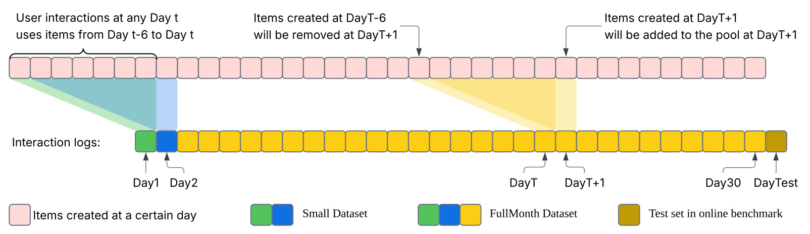
Figure 1 用上方粉色方块表示按创建日期分组的内容，下方彩色方块表示交互日期。任意第 t 天的交互只使用第 t−6 天到第 t 天创建的内容；进入下一天时，最老一天退出，新一天加入。绿色和蓝色对应 Small 的前两天，黄色延伸至 FullMonth 的三十天，最右端单列排行榜测试部分。图中“在线基准”指托管评测入口中的测试集合，不能据此理解为真实线上随机流量结果。这里最关键的信息流是先按日期确定可见交互与候选边界，再连续更新模型，最后在相应日期的留出交互上评估。相邻日期可以共享大部分候选，却总有新增与退出部分，因而模型必须反复适应；单纯在第一天学会 SID 语法并不能保证后续每天有效。图还提示，跨日历史应保留相邻行为的连续性，不能因为目录按日分割就把用户状态每天清空。论文对候选池使用日粒度替换，而真实系统可能在一天内持续变化，因此日界尖峰的形状包含这项离散模拟设定的影响。训练按日期延续参数。用等价记号可概括为：
符号解释：$D_t$ 是第 t 天可使用的训练交互，$\theta_{t-1}$ 是前一天训练后的参数，$\operatorname{Train}$ 表示在当天数据上继续优化，输出为 $\theta_t$。第一天可以从随机模型或预训练模型开始。这个式子概括原文流程，不是额外提出的更新算法。构造新一天最初的训练实例时，会拼接前一天末尾的用户交互作为历史，并以最短和最长历史长度控制上下文。推理时使用对应日期的候选池；历史连续性和可推荐集合是两个独立约束，历史里出现过的旧物品不意味着它今天仍可推荐。
2.2 三类指标与统一评估协议
每日采用留一法：每个用户当天最后一次交互用于验证，其余交互用于训练。FullMonth 按日连续训练并保留每日曲线；需要一个总体分数时，原文使用验证实例数加权。这里每个日期先独立统计相同名称和方向的指标，再聚合为全月结果；不同类型的指标各有一条聚合结果，不能将长播放和点赞先混成一个无明确单位的总分。其表达式为：
符号解释：$N_t$ 是第 t 天验证实例数量，$M_t$ 是当天某一项指标，$M_{\mathrm{FullMonth}}$ 是该指标跨日期的加权结果。权重来自实例数，而非给每一天相同权重；因此大样本日期影响更大。每日轨迹仍是首要报告，因为平均值会隐藏日界退化或后期失稳。另一个独立方向是把第 k 天参数重新测试在 Day 1 验证集，衡量过去模式是否保留；这个测试不应与“Day k 当天效果”混列。
准确性采用点击任务的 HR 与 NDCG，多样性同时包含物品覆盖、Gini、每层唯一 token 数、路径数、熵以及 TopK 层级多样性。附录对 TopK 层级多样性的文字定义使用“比例”，表中数值却表现为唯一 token 个数，如 K=50 时首层为 12.47；复现时应以实现核对归一化方式，不能把 12.47 直接写成 12.47%。Gini 在正文说明仅对至少出现一次的物品计算，这一支持集不包含所有从未推荐的候选，因此与全目录 Gini 的含义不同。比较覆盖率和 Gini 时，要同时固定候选集合、生成数量与支持集。
多行为评估按留出交互的行为标签切分实例，但坚持一次检索、评估所有任务。模型不为点赞和长播放分别生成不同列表。这个约束使目标间的取舍可见，也使单任务序列过滤只能影响训练，不能改变评估时的统一推荐列表。作者把所有指标都改善称为有效进展，出现目标回退称为有缺陷的进展；这是一项严格的研究验收规则。它没有替业务决定多目标权重，也没有规定当负反馈命中指标方向不同时如何完成统一业务效用解释，实际比较应事先确定各指标优化方向。
2.3 基线与多行为强化学习
公开实现的基线包含 SASRec、GRURec、TIGER、LLaDA-Rec 与 MiniOneRec。MiniOneRec 使用 Qwen2.5-0.5B；SFT 学习点击序列，日更新一轮，学习率为 $10^{-4}$，推理束宽为 50。RL 从 SFT 模型继续训练，学习率 $10^{-6}$，每组生成八个候选，附录给出温度 1.0 和 beta 0.2 等参数。这些设置共同构成实验条件，不能把不同架构结果直接解释为同等算力下的算法优势。行为奖励先按反馈类型合并：
符号解释：$B$ 为行为集合，$R_b$ 为行为 b 的奖励，$\alpha_b$ 为其权重。原文把长播放视为正向行为，把点赞、转发、评论、搜索和进入主页等视为互动行为，把 hate 视为负向行为；具体运行参数另含 follow。其作用是让策略优化关注不同反馈，不能把奖励权重当作评估权重，更不能把负反馈标签存在等同于模型已学会压低线上负反馈率。附录还给出 SID 前缀匹配奖励：
符号解释：$L$ 为 SID 长度，$\operatorname{prefix}_i$ 为截至第 i 层的整个前缀，gen 与 target 分别表示生成和目标序列，$\mathbb I$ 是条件成立取一的指示函数。它奖励共享更长前缀的生成，区别于只判断完整 SID 是否完全一致。早期前缀错误会使后续前缀匹配也失败，因此该奖励天然依赖 token 层级结构；码本语义质量会影响它是否与用户偏好一致。语义奖励使用向量余弦相似度：
符号解释：$e_{\mathrm{gen}}$ 与 $e_{\mathrm{target}}$ 是生成与目标对象对应的语义表示，cos 为余弦相似度。它提供精确命中之外的平滑信号，但相似内容不一定产生相同用户行为，不能替代行为验证。三部分的总组合在附录写为：
符号解释：三个 $\lambda$ 控制行为、前缀、语义奖励对最终 R 的贡献。正文报告奖励仅作为训练信号；实际 RL 参数指定 exact_prefix_behavior，同时列出 semantic 等备选选项。因此上式是支持的奖励设计族，不能断言图中主实验一定启用了全部三项。推理不再需要读取目标物品奖励，使用训练后的策略生成列表。SFT 负责跟进新交互分布，RL 尝试在这份分布上调整多行为偏好；图中的持续训练实验将检验二者是否可以互相替代。
3. 实验结果
3.1 数据规模与基准角色
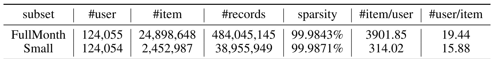
Table 1 中 FullMonth 包含 124,055 个用户、24,898,648 个物品和 484,045,145 条记录；Small 包含 124,054 个用户、2,452,987 个物品与 38,955,949 条记录。表的稀疏度分别为 99.9843% 和 99.9871%，说明即使交互数量巨大，相对用户和物品的笛卡尔积仍极稀疏。最后两列给出用户侧和物品侧的交互关联规模，不能据此推断所有用户都均匀接触所有内容。Small 更适合先比较架构，FullMonth 才承担跨日期的持续训练观察，两者的准确率不能不加说明地横向比较。附录 F.2 又报告总物品 24,401,875 与唯一 SID 24,205,418，进而给出 0.81% 碰撞率；该物品数与主表的 24,898,648 并不一致，原文未在同处解释过滤边界，本笔记保留差异，不自行合并分母。真正复现时应固定具体数据文件和过滤阶段，再计算碰撞及覆盖指标。
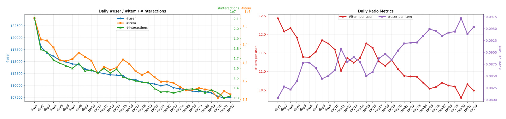
Figure 2 左侧同时展示每日用户数、物品数和交互数，三条曲线使用不同坐标轴；右侧比较每用户物品量与每物品用户量。整体上，左侧规模沿时间下降，期间存在局部反弹；右侧每用户物品量下降而每物品用户量上升。它说明日期之间不只是候选身份变化，验证实例数量及交互密度也在变化。比较某天 HR 的升降时，需考虑当天难度和样本构成，而不能把所有波动都归因于模型学习。图横轴延伸到 Day32，而主要训练流程为 Day1 至 Day30，另有排行榜留出部分；这不能被改写为连续训练三十二天。作者没有通过此图分离用户流失、候选过滤和采样造成的贡献，因此曲线是发布数据的描述性统计，不是平台总体活跃度趋势，也不是模型导致用户行为变化的因果证据。
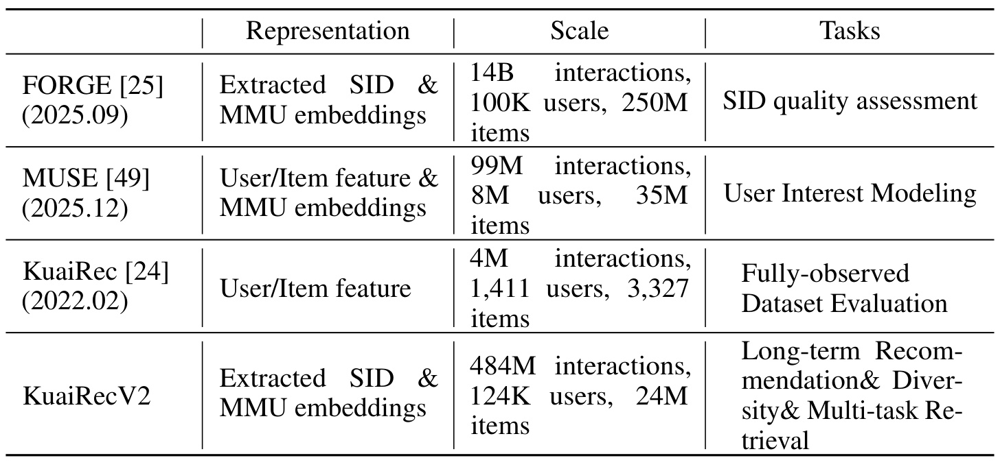
Table 2 按表示形式、规模和任务定位对照 FORGE、MUSE、早期 KuaiRec 与 KuaiRecV2。FORGE 的交互和物品规模更大，重点是 SID 质量；MUSE 提供用户或物品特征及多模态向量，面向用户兴趣；旧 KuaiRec 的小规模全观测属性适合另一类评估问题。新基准的差异主要在长期更新、多样性与多任务的联合观察，不是“所有维度最大”。这一对比对选实验环境很有帮助：研究 tokenization 可以考虑专门的 SID 数据，研究持续训练需要可按时间滚动的日志，研究去偏则要关注曝光与观测机制。表中跨数据集规模不能证明模型效果强弱，也不能证明从旧数据集迁移到新数据集就获得了更多无偏反馈。本文发布的历史日志仍由已有推荐策略形成，与全面随机曝光或全观测标签有不同性质。
3.2 动态候选下的适应与遗忘
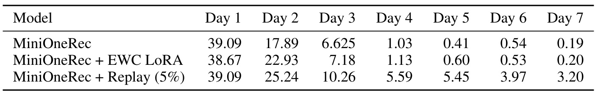
Table 3 的列是训练到第几天的 checkpoint，评估对象始终为 Day1 验证实例。MiniOneRec 从 Day1 的 39.09 降至 Day7 的 0.19；EWC LoRA 为 38.67 到 0.20；保留 5% 旧实例的 Replay 为 39.09 到 3.20。Replay 从 Day2 起最好，但 Day7 仍远低于各自 Day1。这里不能只强调 3.20 相比 0.19 的倍数优势而忽略原始保留水平，更不能把这些数解释为 Day7 当天的推荐质量。表题没有像 Table4 一样明确重复 $10^{-3}$ 的缩放说明，因此此处按原表数值引用，不擅自转换成百分比或百分点。EWC 在早期有所缓解，到 Day6 的 0.53 还略低于基础模型的 0.54，说明约束更新并不保证每个时刻都优于基线。回放的额外存储、读取与训练预算未在这张表中统一展示，它支持“回放能部分缓解遗忘”，不足以支持“回放以最优成本解决持续学习”。
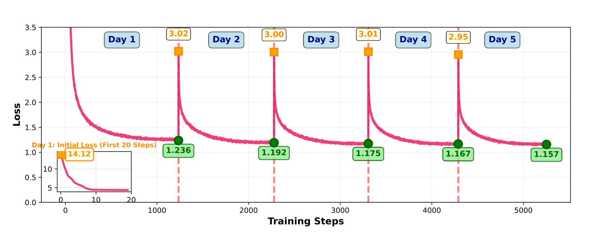
Figure 3 横轴为训练步，纵轴为损失。第一天从高损失迅速下降，插图保留最初二十步；后续每天换入数据与候选后，橙色点对应约 3.02、3.00、3.01、2.95 的初始损失，绿点对应 1.236、1.192、1.175、1.167、1.157 的日末损失。模型每天仍能优化，但前一天收敛没有让下一天免于显著回退。它给出了动态分布需要重复适应的直接证据，同时也显示日末损失随时间缓慢降低，不能说模型完全没有跨日学习。尖峰发生在候选替换和新日志到来的共同边界，图本身没有分别控制二者，也没有把优化器状态、样本难度和新内容比例单独消融。因此，最稳妥的解读是该流程存在明显日界适应成本，而不是把全部尖峰都归为某一种遗忘机制。损失值同样不能替代 TopK 召回，需和固定旧集及当日验证曲线共同阅读。
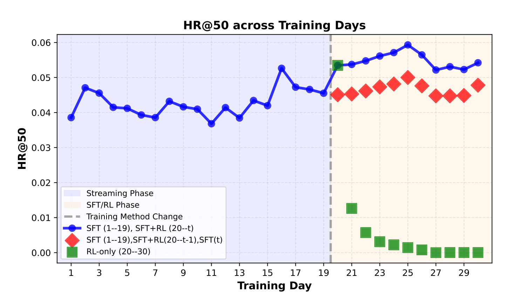
Figure 4 在前十九天共同使用 SFT，从 Day20 开始比较训练策略。蓝色圆点是当天 SFT 后再做 RL 的结果，红色菱形是在同一条交替历史上、当天 RL 前的结果，绿色是 Day20 以后只继续 RL 的分支。蓝线多数时间约在 0.05 上下，绿线 Day20 有收益后迅速退到接近零，显示本文设置下 RL 无法独立承担新分布的适应。尤其要看图例中的历史条件：红线写作前十九天 SFT、随后直到前一天均 SFT+RL、当天只 SFT。它不是从 Day20 开始始终 SFT-only 的完全独立长期对照，所以蓝红当天差值更接近同一交替分支上的当日 RL 增量，不能扩张为完整三十天纯 SFT 与混合训练的严格因果比较。绿色 Day20 与蓝色重合也提醒我们，区别在于后续是否持续获得 SFT 更新。论文主张多行为 RL 在该实验中需要与 SFT 配合，尚未证明任意 RL 算法或奖励设计都无法持续适应；缺少等总训练计算预算对照，也不能据此宣称混合方案更省算力。
3.3 大目录精度与两层多样性
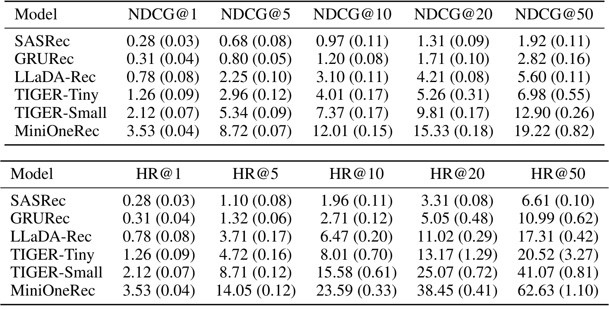
Table 4 所有均值与标准差按 $10^{-3}$ 报告，使用三个随机种子。MiniOneRec 的 NDCG@50 是 19.22，即 0.01922；HR@50 为 62.63，即 0.06263。TIGER-Small 对应为 12.90 和 41.07；TIGER-Tiny、LLaDA-Rec、GRURec 与 SASRec 的 HR@50 则为 20.52、17.31、10.99、6.61。这个排序支持该公开设定中生成序列模型在大物品集合上的优势，但不能把 62.63 误报为 62.63% 命中率。对照模型的参数规模、预训练来源、损失与训练轮次并不全部一致：MiniOneRec 从预训练 Qwen2.5-0.5B 出发，传统模型使用独立配置。表中三个种子的标准差衡量重复运行变化，不能自动变成每个差值的统计显著性证明；论文检查清单也明确未提供正式统计显著性分析。此表在静态 Small 上比较架构，其最佳模型仍会在 FullMonth 的跨日保留测试中大幅遗忘，正好体现“单日精度较好”和“长期稳定”属于不同验收项。
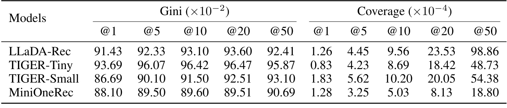
Table 5 的 Gini 以 $10^{-2}$ 为缩放，Coverage 以 $10^{-4}$ 为缩放。MiniOneRec 在 Top50 的 Gini 数字为 90.69，实际为 0.9069；覆盖数字 18.80 对应 0.00188。LLaDA-Rec 的 Top50 覆盖为 98.86，对应 0.009886，明显高于 MiniOneRec，但 Table4 的精度更低。它给出准确性最优不代表覆盖最好的具体反例，而不是仅抽象提醒存在多目标取舍。TIGER-Small 的 Top50 覆盖 54.38 也高于 MiniOneRec，同时 Gini 93.10 又更高，表明“覆盖更多”和“推荐次数更均匀”不是一回事。由于作者只对被推荐至少一次的物品计算 Gini，不能把它当作全目录所有零频物品也纳入后的集中度；覆盖率恰好补充了这些未触达部分。要检验新解码策略的效果，必须保持每用户输出数和评估人群一致，否则更宽的束搜索本身就可能扩大覆盖，但同时增加计算量。
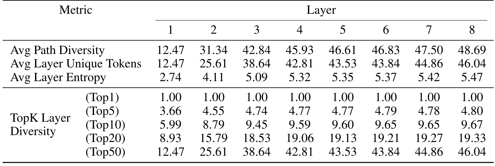
Table 6 横向的八层对应八个 SID 位置。Top50 情况下第一层平均只有 12.47 个唯一 token，第二层升到 25.61，最终层为 46.04；累计路径数从 12.47 到 48.69，层熵从 2.74 到 5.47。它说明五十条结果在最粗层级共享很多前缀，后面逐步分叉；后几层累计路径增长有限，反映新分支主要在较早层形成。路径数不等于该层唯一 token 数：同一 token 在不同前缀下仍可能形成不同路径，因而末层 48.69 条路径和 46.04 个唯一 token 可以同时出现。表中 Top1 每层都为 1，只是在单条推荐内没有跨候选多样性，不是码本退化到一个 token。正文把这种分叉分布解释为多样性控制难题；据此设计首层分散的解码是合理研究方向，但增加首层覆盖是否提升用户体验，还取决于语义对齐和任务需求。码本每层 512 个取值不意味着每个用户理应均匀覆盖全部 512 个；把层熵直接最大化也可能损害个性化准确率。
3.4 多行为结果与实验边界
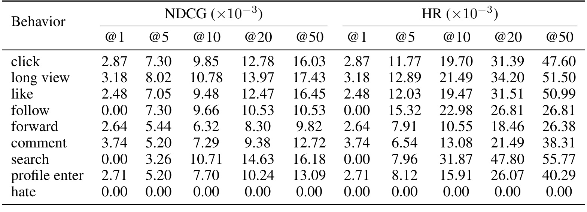
Table 7 是 MiniOneRec SFT-only 在 Day21 的行为切片，不是 RL 相对 SFT 的逐任务提升表。点击 HR@50 为 47.60、长播放 51.50、点赞 50.99、搜索 55.77，均需乘 $10^{-3}$；关注为 26.81，转发 26.38，负反馈 hate 在所有列均为零。它支持不同反馈子集具有不同检索模式的描述，但未报告各行为样本分母与置信区间，不能仅因搜索 55.77 大于点击 47.60，就断定模型更擅长优化搜索率。各行的目标人群、行为频率和条件难度可能不同。hate 为零也不能直接写作“负反馈被消除”：它表示该行为目标物品未被命中，可能与标签稀疏、目标条件和模型偏好有关，更不是线上负反馈发生率为零。表格通过统一检索结果观察多个行为，但没有提供每一项相对另一模型的联动提升，故不足以单独证明奖励设计已满足作者提出的所有指标共同进步规则。
附录把 play-time 与 duration 定义为毫秒连续信号，其他列为二值标签；本文没有在公开 PDF 中核验到 long-view 的具体时长阈值和全部上游加工 SQL，因此不把它翻译为固定秒数的有效播放。附录还比较用点击序列与长播放序列训练的效果，提示目标数据选择会影响任务表现；这与改变架构是不同变量。公开基准仍缺少真实策略干预、完整用户画像和跨域场景，故“更接近线上”的主张应限定为时间组织、候选变化、多样性和多行为评估更丰富，不能扩展成离线指标已能准确预测线上增益。当前证据没有提供业务收益的随机实验，也没有给出对不同算法统一的吞吐、延迟和内存成本结论。
4. 总结
4.1 我的判断
KuaiRecV2 最值得保留的贡献，是把生成式推荐的评估对象从单次静态命中扩展到随时间变化的模型轨迹与多个并列目标。同一组结果中，MiniOneRec 可以取得最高的 Small HR，同时在旧验证集上严重遗忘、在覆盖率上落后于其他生成模型。这使研究者无法再用一列平均分掩盖其他维度。它也把 SID 的可生成性与物品的真实触达拆开，让 tokenizer、生成器和解码器分别有了可追踪的诊断对象。
对实际训练系统，可迁移的做法是同时保存当天新集、固定旧集和分行为切片的完整时间曲线，记录候选池、tokenizer 版本、训练数据边界与模型 checkpoint。这样，日界损失变化才能与新物品比例、回放预算和奖励更新关联起来。对个性化大模型或长期记忆系统，同样可以借鉴“新知识适应与旧知识保留分别验收”的协议；不过推荐物品池退出与知识失效并不完全相同，不能把这里的回放结论直接移作通用持续预训练的收益预测。
4.2 局限与后续跟进
需要保留四个边界。第一，活跃用户过滤与匿名化画像使低活跃、冷启动及画像依赖方法的外推有限，原文称保留超过 93% 原日志交互也不能替代用户覆盖率。第二，历史日志来自已有推荐系统，离线统一检索仍不等于干预后的用户真实反馈，不能用 HR 增益折算业务收益。第三，静态 Small、动态 FullMonth、旧集保留和多行为切片具有不同分母，应分别报告；主表与附录物品数差异也需在数据版本层面核对。第四，奖励组合、束搜索宽度、预训练初始化与训练预算共同影响结果，缺少全面匹配成本的比较时，无法把某个架构的优势只归因到生成范式。
后续优先跟进三件事。其一，核对作者仓库的发布数据、tokenizer 卡片与逐行为标签定义，确认创建时间、交互时间、标签阈值和过滤阶段，才能复现七天候选规则及各指标分母。其二，在固定总训练计算和回放内存预算下对照持续 SFT、SFT+RL 与 Replay，保存当天适应与旧集保留，检验混合训练收益来自目标还是额外训练。其三，验证 token 多样性改变如何传导到真实物品与业务类目：同时报告首层覆盖、完整 SID 合法率、item 覆盖、准确率与负反馈切片，避免只提高一个内部多样性指标。若这些复核完成，再将公开基准中的稳定收益作为线上小流量验证候选；本轮精读只记录原文证据，没有执行相关生产实验。
还应单独保留两项复核证据。数据方面，七天创建窗口和三十天交互窗口涉及两种时间，缺少物品创建时间就无法仅凭用户行为时间重建候选资格；在接入自己的日志时需要明确两个时间字段及其时区。评估方面，多行为标签可能在同一次交互中共存，行为切片不一定是互斥人群，不能把各行命中率相加当作总命中率。论文没有给出这些切片之间的交集规模，复现者应同时输出每行样本量和交集描述。
对结果发布，建议先固定一个可重复的小规模协议，再扩展到全月：同一数据版本、同一 tokenizer、相同日界、相同验证实例和相同解码宽度都属于比较条件。持续训练的平均收益若来自少数大样本日期，应保留每日曲线说明，而不是只展示加权总分。这样做能够直接检验本文的研究问题，也能减少将数据组织变化误归因于模型模块的机会。